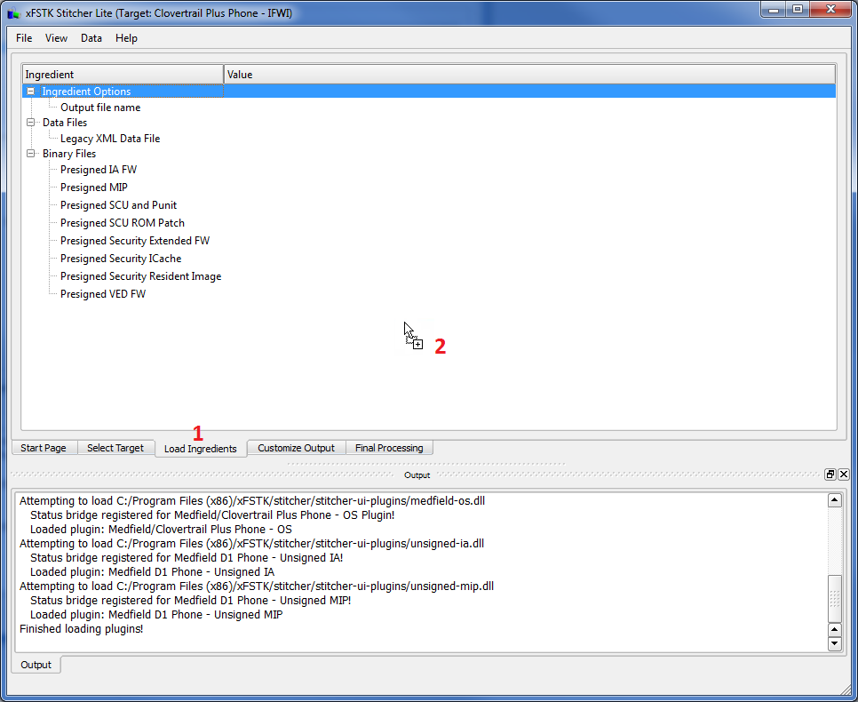
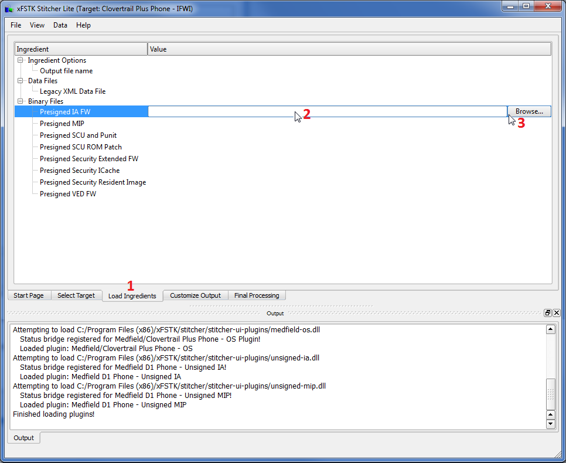

Contents
Introduction
Step 1: Select Target
Step 2: Load Ingredients
Step 3: Customize Output
Step 4: Finalize Processing
Step 2: Load Ingredients
How do I load ingredients?
Drag and Drop
- Select the "Load Ingredients" tab.
- Drag and drop ingredients (files or folders) anywhere on the xFSTK Stitcher Lite application.
- The application will populate the paths of known ingredients within the Load Ingredients tab. Details are displayed in the Output window (e.g. found ingredients, duplicate ingredients)

Load Ingredients: Drag & Drop
Browse
- Select the "Load Ingredients" tab.
- Click on an ingredient value to display the browse button.
- Click on the browse button to search and select the ingredient to load.

Load Ingredients: Browse
What ingredients do I need?
IFWI (Clovertrail Plus Phone, Medfield D1 Phone)
- Legacy XML Data File
- Presigned IA FW
- Presigned MIP
- Presigned SCU and Punit
- Presigned SCU ROM Patch
- Presigned Security Extended FW
- Presigned Security ICache
- Presigned Security Resident Image
- Presigned VED FW
Unsigned IA (Clovertrail Plus Phone, Medfield D1 Phone)
- Legacy XML Data File
- Hooks
- IA FW
- IA FW Supplemental
- Presigned SCU and Punit
- Presigned Security Extended FW
- Presigned Security ICache
- Presigned Security Resident Image
- Presigned VED FW
Unsigned MIP (Clovertrail Plus Phone , Medfield D1 Phone)
- Legacy XML Data File
- Presigned Security Extended FW
- Presigned Security ICache
- Presigned Security Resident Image
- Public Key 0
- Public Key 1
- Public Key 2
- Public Key 3
- Public Key 4
OS (Clovertrail Plus Phone , Medfield D1 Phone)

 1.7.6.1
1.7.6.1